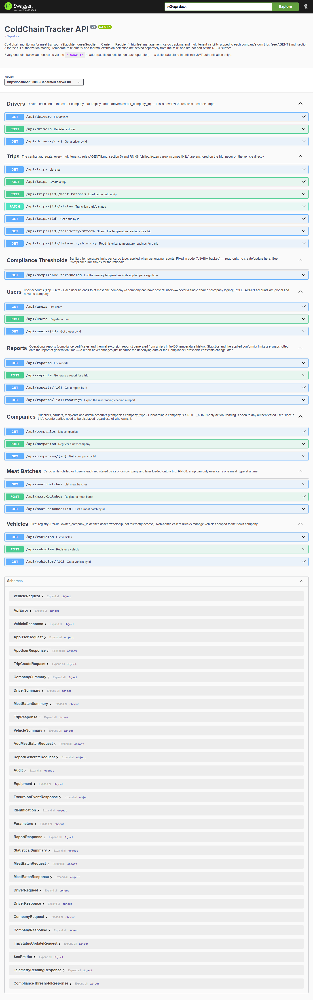
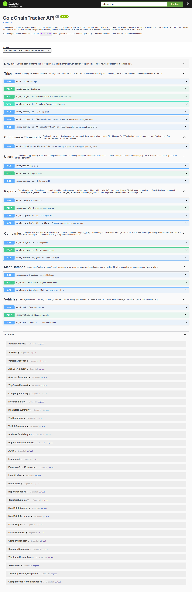
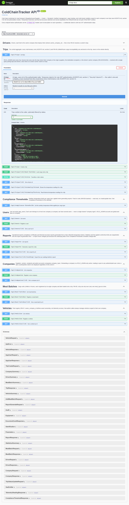
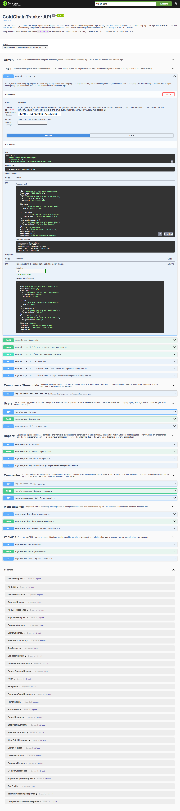

Aplicação Spring Boot real subida localmente (Postgres, InfluxDB e Mosquitto via Docker), navegada e testada ponta a ponta com Playwright: Swagger UI, chamadas HTTP reais e verificação do guard de autenticação.
O Playwright navegou até o Swagger UI gerado pelo springdoc-openapi e esperou o carregamento da spec (/v3/api-docs). Todos os módulos aparecem: Trips, Reports, Compliance Thresholds, Users, Companies, Meat Batches e Vehicles.

Clique no cabeçalho da tag Trips — o agregado central da API (regras de multi-tenancy e RN-08 de incompatibilidade de carga resfriada/congelada ancoradas aqui).

Chamada real feita de dentro do browser (fetch), com o header X-User-Id de um ROLE_ADMIN existente no Postgres. Retornou a trip de demonstração com veículo, motorista e as duas empresas ligadas.
GET /api/trips X-User-Id: 95d20122-5c7b-4be9-9fb0-91eccdc10d83 → 200 OK [ { "id": "f3eafe7c-2e9f-425c-8c7e-cd6165ea9928", "routeCode": "DEMO-ROUTE-01", "vehicle": { "licensePlate": "DEMO123", "deviceId": "sim-sensor-01" }, "driver": { "name": "Motorista Demo" }, "originCompany": { "corporateName": "Frigorifico Demo Origem" }, "destinationCompany": { "corporateName": "Mercado Demo Destino" }, "status": "IN_PROGRESS", "startedAt": "2026-09-14T01:56:00.78Z", "meatBatches": [] } ]
Usando o id retornado no passo anterior, confirma que GET /api/trips/{id} devolve o mesmo objeto completo — mesma regra de autorização do RN-05 (isolamento por empresa) validada.
GET /api/trips/f3eafe7c-2e9f-425c-8c7e-cd6165ea9928 X-User-Id: 95d20122-5c7b-4be9-9fb0-91eccdc10d83 → 200 OK { "routeCode": "DEMO-ROUTE-01", "status": "IN_PROGRESS", "finishedAt": null, … }
A mesma chamada sem X-User-Id deve falhar — e falhou como o esperado, confirmando que nenhum endpoint de trip é acessível sem identificação.
GET /api/trips (sem X-User-Id) → 400 Bad Request { "status": 400, "error": "Bad Request", "message": "Required request header 'X-User-Id' for method parameter type UUID is not present" }
Para fechar, o teste repete a chamada pela própria UI: clica em "Try it out", preenche o campo X-User-Id e executa — o Swagger monta o cURL, faz a requisição real e mostra a resposta 200 com o JSON completo, idêntico ao obtido via fetch direto.

